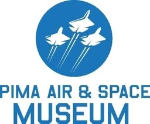

Discover Tucson, AZ
Headquarters to the AI Chamber of Commerce
Upcoming Events
- Zoolights: Holiday Magic: Dec 5th - Jan 5th. As you stroll through the Zoo, beautifully decorated, surround yourself in an enchanting wonderland of festive lights, light shows, and displays with a flurry of heartwarming activities around every corner.
- Winterhaven Festival of Lights: December 14-28. Since 1949 the Winterhaven Festival of Lights has grown to become a Tucson Tradition. This year, for the 75th time, we welcome the community of Tucson to come enjoy the lights and celebrate the holiday season.
- Christmas Balloon Glow: Dec. 14th 5-8pm. At the Pima Air & Space Museum Copper Star Balloons will have 4 hot air balloons lit up for a beautiful static display! Santa, Mrs. Clause, and their elves will be here as well! The museum will be decorated to lend a festive atmosphere to the history of flight.
Top Attractions
- Pima Air & Space Museum: One of the largest aerospace museums in the world, featuring over 350 aircraft and spacecraft. It's perfect for aviation enthusiasts.
- Saguaro National Park: This park is split into two districts (East and West) surrounding Tucson and is famous for its iconic saguaro cacti. Enjoy scenic drives, hiking trails, and stunning desert landscapes.
- Old Tucson: A historic movie studio turned theme park, Old Tucson offers Wild West entertainment, reenactments, and a glimpse into Hollywood's portrayal of the Old West.
Demographics
- Population: Tucson is the second-largest city in Arizona, after Phoenix, with a population of approximately 550,000 people in the city proper. The larger metropolitan area (Pima County) has over 1 million residents.
- Language: English is the primary language spoken with roughly 30% of households speaking Spanish at home.
- Key Industries: Education, Aeorspace and Defense (Raytheon Missile Systems), Healthcare, Technology.
El Tour De Tucson
El Tour de Tucson is one of the largest bicycling events in America. Held annually the Saturday before Thanksgiving, it attracts over 9,000 cyclists of all ages and abilities from around the United States and beyond.
Sonoran Desert Museum
The Arizona-Sonora Desert Museum is a world-renowned zoo, natural history museum, and botanical garden, all in one place. Experience the unique flora and fauna of the Sonoran Desert.
Saguaro National Park
Explore the majestic saguaro cactus forests of Saguaro National Park. Hike scenic trails, enjoy desert vistas, and learn about the unique ecosystem of the Sonoran Desert.
Old Tucson Studios
Step back in time at Old Tucson, a historic movie studio and theme park. Explore the sets of classic Westerns, enjoy live entertainment, and experience the Old West.
Pima Air & Space Museum
Discover aviation history at the Pima Air & Space Museum, one of the largest aerospace museums in the world. See hundreds of aircraft and spacecraft, from historical planes to modern jets.
Tucson Botanical Gardens
Escape into a serene oasis at the Tucson Botanical Gardens. Explore themed gardens, beautiful courtyards, and a butterfly garden in this vibrant botanical center.